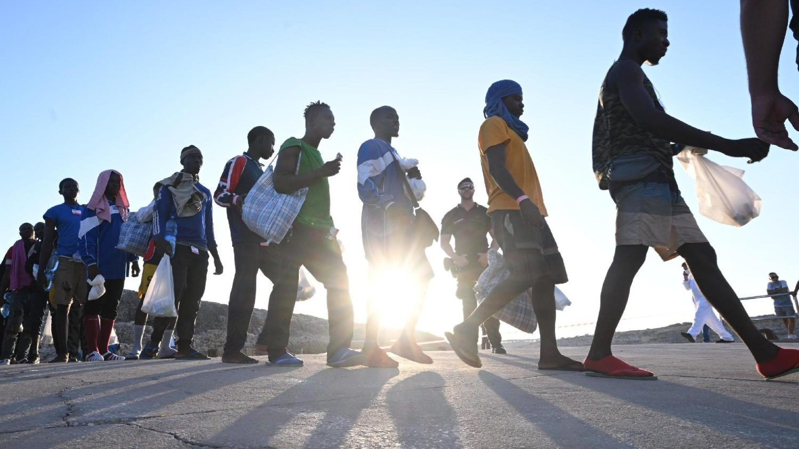
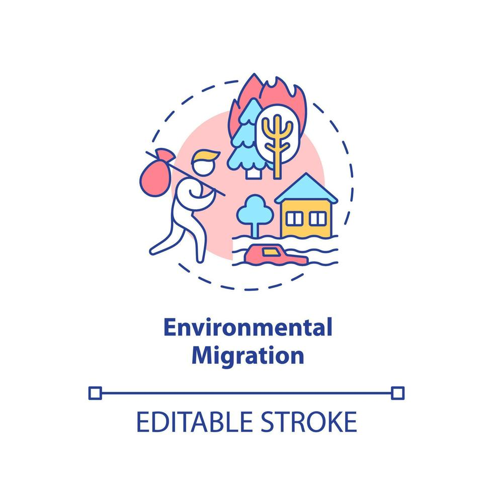
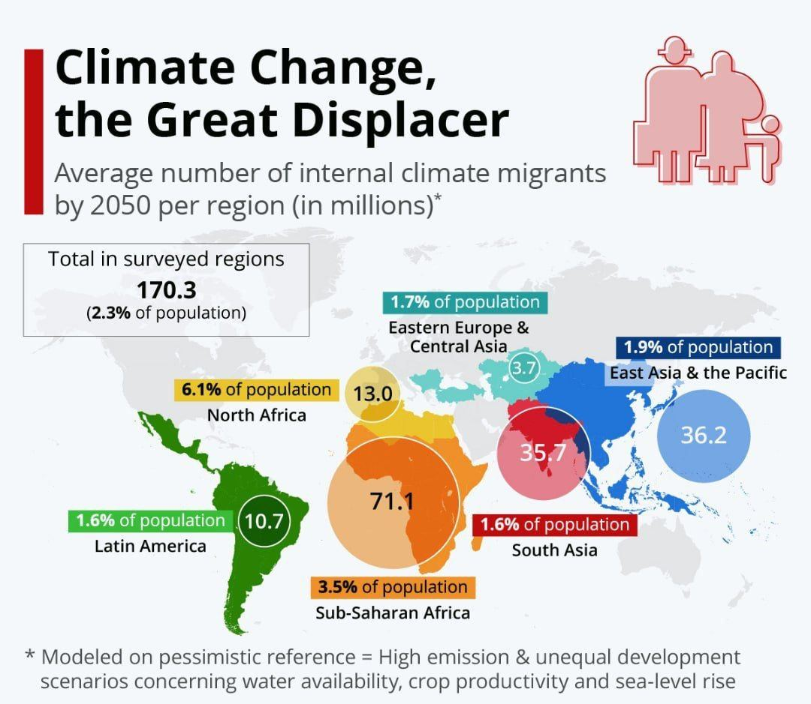
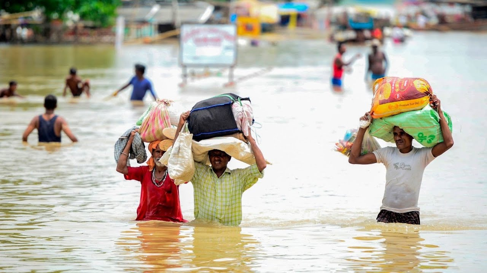
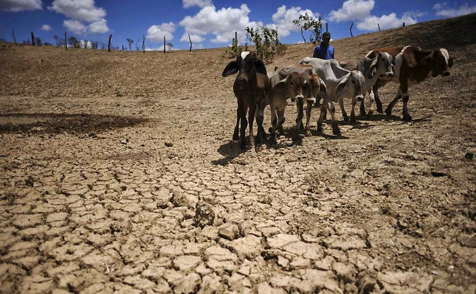
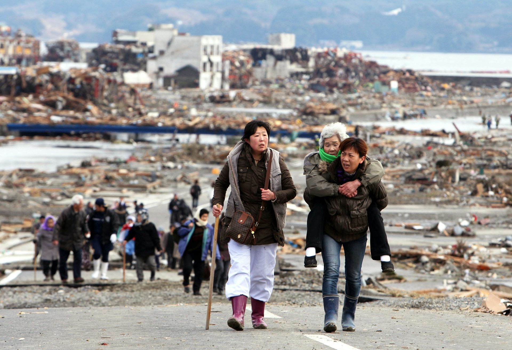

Экологическая миграция
Как изменения климата влияют на людей?
Исследование переселений людей из-за засух, наводнений, повышения температуры, нехватки воды и других природных угроз.

Что такое экологическая миграция?
Экологическая миграция — это переселение людей из мест, где становится трудно или опасно жить из-за природных и климатических изменений.
Это может быть
временный переезд после катастрофы или постоянное переселение.
Главная причина
ухудшение условий жизни: вода, еда, жильё, безопасность.
Почему тема важна
число людей, затронутых климатом, с каждым годом растёт.

Почему людям приходится уезжать?
Засухи
урожай гибнет, уменьшается доступ к воде, людям становится сложно выживать.
Наводнения
разрушают дома, дороги, школы и заставляют семьи покидать район.
Жара и пожары
повышают риск для здоровья и уничтожают населённые пункты.
Стихийные бедствия
штормы, ураганы и оползни делают территорию небезопасной.
Как это влияет на людей?
- Люди теряют дома и имущество
- Возникают проблемы с работой и доходом
- Дети могут прерывать обучение
- Появляется стресс и чувство нестабильности
- Растёт нагрузка на города, куда приезжают переселенцы

Примеры экологической миграции в мире
Бангладеш
Частые наводнения и циклоны заставляют людей переезжать в более безопасные районы.
Африка
Засухи и нехватка воды ухудшают сельское хозяйство и вынуждают семьи покидать деревни.
Островные государства
Повышение уровня моря угрожает прибрежным территориям и домам людей.

Как это связано с Казахстаном?
В Казахстане климатические изменения тоже влияют на жизнь населения, особенно в засушливых и экологически проблемных районах.
Засушливые территории
нехватка воды осложняет сельское хозяйство и жизнь в сёлах.
Аральский регион
экологический кризис ухудшил условия жизни и здоровье людей.
Переезд в города
часть населения уезжает в крупные города в поисках стабильности и работы.

Статистика и что можно показать на слайде
Диаграмма
Число природных катастроф по годам
Карта
Регионы мира, где сильнее всего климатические риски
Схема
Изменение климата → ухудшение условий → миграция
Казахстан
Примеры экологически сложных территорий и внутреннего переезда
Итоги проекта
- Изменение климата уже влияет на переселение людей
- Основные причины — засухи, наводнения, жара и разрушение среды жизни
- Экологическая миграция влияет на семьи, города и экономику
- Для решения проблемы нужны экологические меры и поддержка населения
